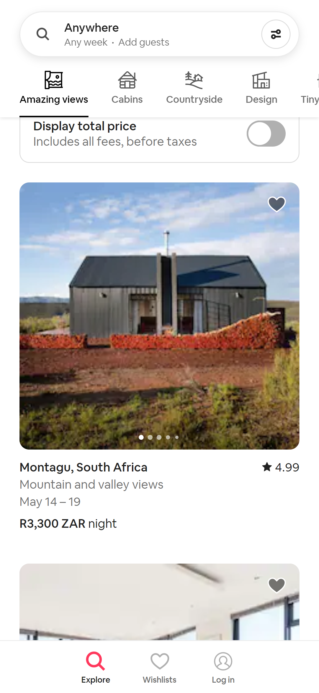
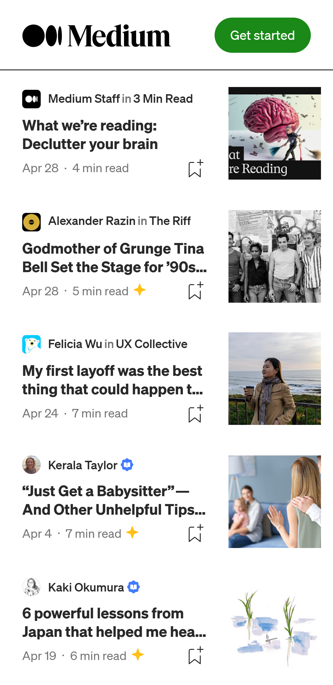
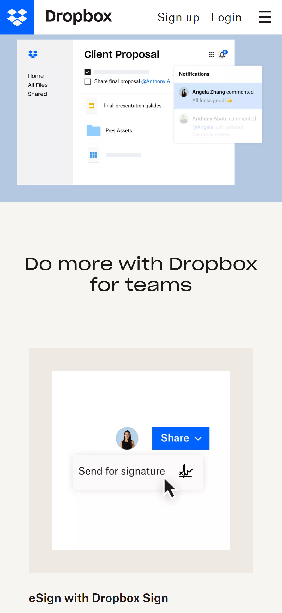

Visual Hierarchy
Company Name: Airbnb
Company Website: Airbnb
The website uses bold typography and contrasting colors to create a clear hierarchy of information. For instance, the "Search" bar is the most prominent element on the homepage, drawing the user's attention to the main action of the website. Additionally, the use of white space and clean design makes the information easy to read and digest.
White Space and Clean Design
Company Name: Medium
Company Website: Medium
Medium's website is a great example of the use of white space and clean design to create a visually appealing and easy-to-read layout. The website uses a minimalistic design with plenty of white space to make the text stand out and the reading experience more enjoyable. The use of a simple and consistent typography also helps to create a clear hierarchy of information, making it easier for users to navigate through articles..
Repetition
Company Name: Dropbox
Company Website: Dropbox
Dropbox's website is a great example of the principle of repetition. The website uses consistent branding and design elements throughout the site, such as the use of the same font and color scheme. This consistency helps users to easily identify Dropbox's brand and makes it easier to navigate the site. Additionally, the use of repetition in the design creates a sense of cohesiveness and reinforces the overall branding and message of the website.